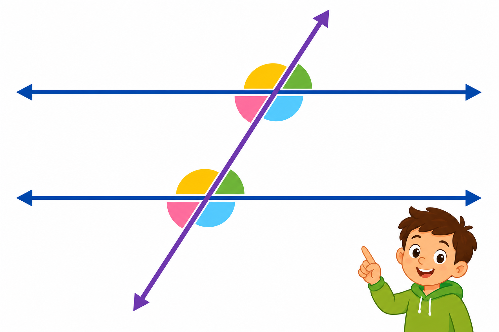

1
proste równoległe
паралельні прямі

📘 Co to jest? Що це?
Proste równoległe biegną obok siebie i nigdy się nie przecinają — jak szyny torów.
Паралельні прямі йдуть поруч і ніколи не перетинаються — як рейки колії.
⭐ Zapamiętaj Запам'ятай
a ∥ b
Запис у зошиті: a ∥ b (знак паралельності).
⚠ Nie pomyl Не плутай
- ∥ nigdy się nie zetkną≠ prostopadłe ⊥
- sieczna tworzy kąty
✅ Przykłady Приклади
- ∥ — równoległe
- a ∥ b
- tory kolejowe ∥
- nie przecinają się
- narysuj dwie ∥